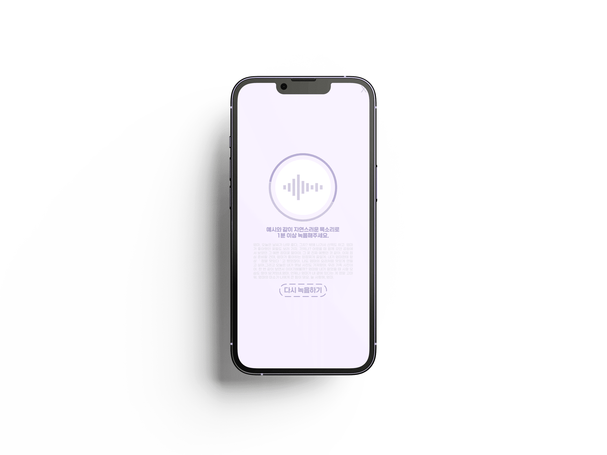
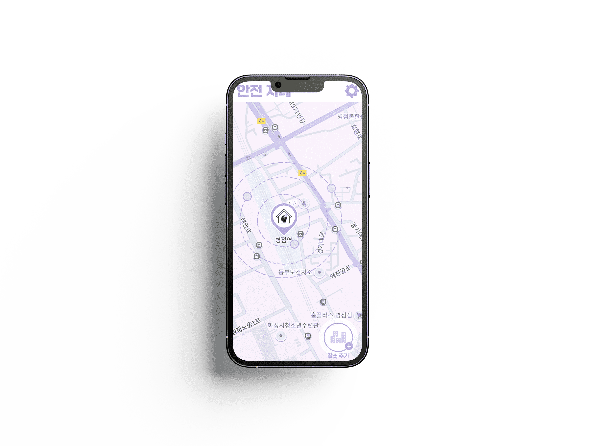
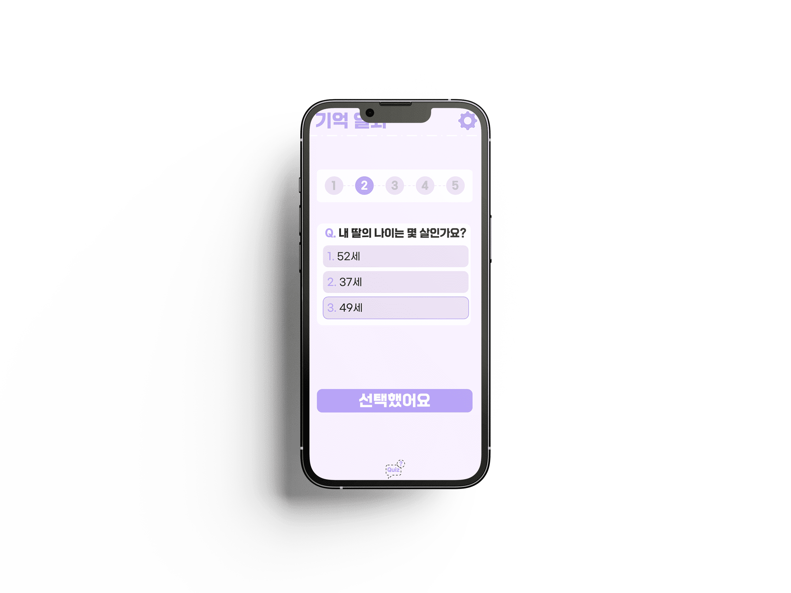
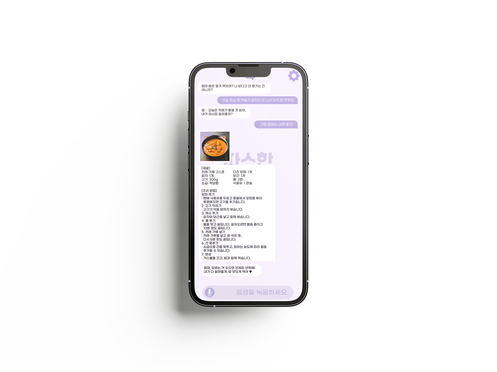

치매 · 인지 장애 노인의
삶의 질 향상과 독립적인 생활을 지원하기 위해
AI 기반 융합 어플을 기획하였습니다.
가족 목소리 AI 합성 알람으로
치매 · 인지 장애 노인의
정서 안정과 일상 루틴 유지를 돕는 기능
실시간 위치 추적 및 가상 울타리
이탈 알림으로 치매 노인의
실종을 예방하고 보호자의 불안을 줄이는 기능



추억이 담긴 사진 기반의 맞춤형 퀴즈를 통해
치매 · 인지 장애 노인의 기억력과 인지 기능을
향상하는 훈련 기능
보호자 부재 시 AI가 사진 · 음성 메시지로 소통을 대신하여
치매 · 인지 장애 노인의 외로움을 해소하고
정서적 안정을 돕는 기능